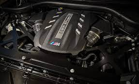
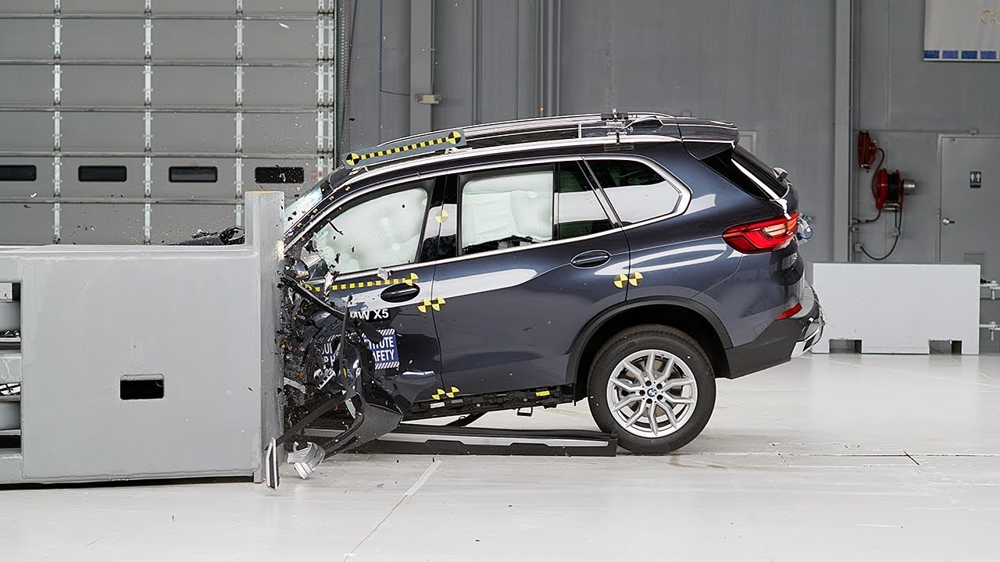
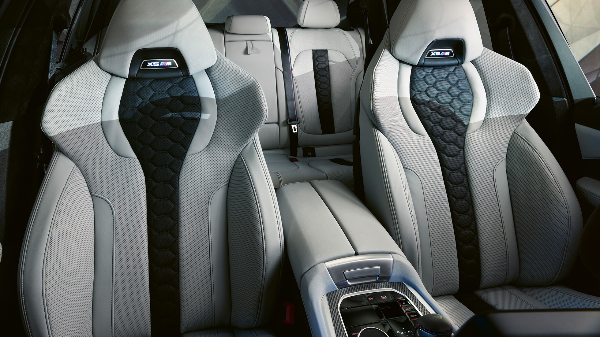
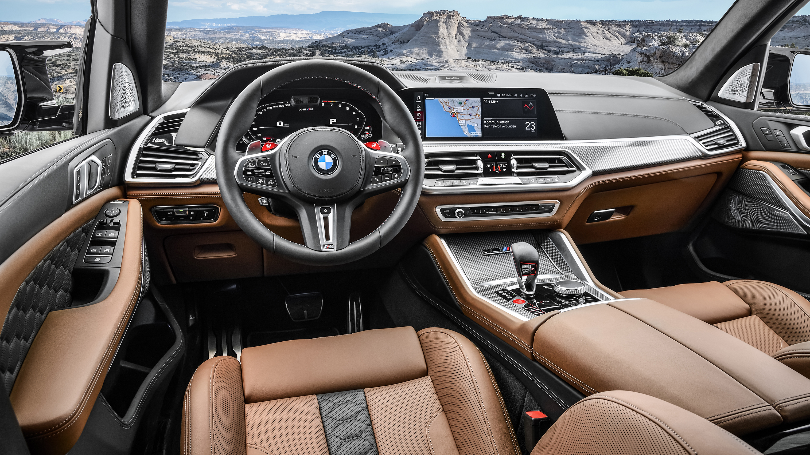

Performance
The BMW X5M Competition is equipped with a powerful V8 engine producing over 600 horsepower, enabling it to accelerate from 0 to 60 mph in just 3.8 seconds.
Additionally, the vehicle features an advanced M xDrive system with an active rear differential, providing exceptional traction and handling in various driving conditions.
Safety
For safety, the BMW X5M Competition comes with a suite of advanced driver-assistance systems, including adaptive cruise control, lane departure warning, forward collision warning, and automatic emergency braking.
Furthermore, the vehicle is equipped with a comprehensive airbag system and a rigid body structure designed to protect occupants in the event of a collision.
Comfort
In terms of comfort, the BMW X5M Competition offers luxurious amenities such as premium leather upholstery, heated and ventilated front seats, a panoramic sunroof, and quad-zone automatic climate control.
The vehicle also features advanced suspension technology, including adaptive dampers, which adjust the ride quality based on road conditions and driving preferences.
Infotainment
The BMW X5M Competition boasts a cutting-edge infotainment system with a large touchscreen display, wireless Apple CarPlay and Android Auto integration, navigation, and a premium sound system.
Additionally, the vehicle offers advanced connectivity features such as a Wi-Fi hotspot, Bluetooth connectivity, and voice control functionality for hands-free operation of various functions.